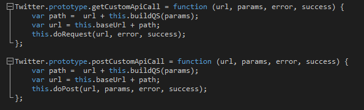

Make sure you already have Node and the Node Package Manager installed, and then go ahead and navigate in the command line to where you are going to be keeping your new app. You can download the package.json file I used if you want
a starting point, or you can run npm init in the command line to generate your own. If you use mine, you can simply run npm install and it will get the Twitter JS Client package for you. Otherwise, you'll have to run
npm install twitter-node-client.
Download package.json
Now that we have our environment ready to go, go ahead and create a new JavaScript file. You're going to make sure the app includes the Twitter JS Client library we downloaded, the various secret keys you got from the previous page,
and an instantiation of our Twitter client instance. Go ahead and run this really basic script with node yourScriptHere.js to make sure everything runs with no errors.
A library or API may not always have an easy and direct way to do exactly what you're trying to accomplish. However, they generally will give you all of the basic tools you will need to get the job done with a little ingenuity. Fortunately for us, Twitter has thought of almost every conceivable type of data you might want to access via their API, which has extensive and helpful documentation. Unfortunately for us, the library we're using to access the Twitter API doesn't directly implement every single method Twitter came up with. Fortunately for us (again), the creators of the library knew this might be the case, so they left a little hint in their code for us to find. I give you, their generic GET and POST functionality:  Don't worry if this doesn't make a lot of sense, we're going to go in-depth into what these mean later. If you get stuck, you can always look at how other similar functions in the library work (which is what I did) and use that as a guide for what format these functions expect their parameters to be entered as.
Now let's actually put all of this learning we're doing to use and write some custom functionality.
Previous Next